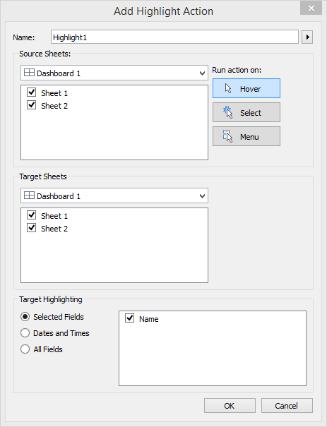

Assignment 10: Building a dashboard with Tableau#
You’ve made it to your last assignment of the semester! In this assignment, you’re going to learn how to “put everything together” into the form of an interactive dashboard. Dashboards are applications that may include multiple charts, which in some cases are configured to interact with one another. While there are many ways to build dashboards, including in Python, one of the most popular software applications for these types of visualizations is Tableau.
Tableau, like other software products we’ve discussed this semester, employs a tiered pricing structure. We’ll be working in this assignment with Tableau Public 2021.3, a free version of Tableau. Tableau comes in other flavors; Tableau Desktop is the core commercial version, and Tableau Server is an enterprise version that can be deployed from a company’s server. Tableau Public includes most of the features of the paid versions; the key caveat is that your visualizations must be saved to Tableau’s public cloud and shared publicly; private visualizations are only available in the paid versions.
Tableau Public is installed on the computers in our classroom. If you are working on your own computer, you can install it from https://public.tableau.com/en-us/s/download; I’d recommend this for completing the assignment. All you need to provide is your email address to get this done. However, at this point I’d also recommend creating a Tableau Public profile - this will be necessary for the assignment as well. From https://public.tableau.com/s/, click the “SIGN IN” button in the upper right of the screen; next, click the “Create one now for free” link to create a profile. Once you’ve activated your profile, you’ll find an available link to download the Tableau Public application as well.
Assignment scenario
At the end of our class on geographic data and visualization, we discussed the pros and cons of visualizing data with maps or charts, or vice versa. As a refresher, we compared the following map of primary sector employment by state in Mexico:

With the following seaborn dot plot:

Certainly, there are advantages and disadvantages to each plot; for example, the map shows geographic clustering (e.g. high values in the south of Mexico), whereas the plot more clearly displays quantitative differences between states. A solution to this could be to include both visualizations in a report (like in a Jupyter Notebook!) to show the data in different ways. However: there are also ways to include both the map and the dot plot in the same graphic - and make the two visuals interact with each other! Creating charts like this is one of Tableau’s strengths - and something you’ll learn how to do in this assignment.
Mapping Mexican states in Tableau#
To get started, download the data for this assignment from the following link: http://personal.tcu.edu/kylewalker/mexico.csv, and save it somewhere where you’ll know how to find it. Next, launch the Tableau Public application. You should see som Drag and drop your Mexico CSV file onto the application, and Tableau will load it for you. You’ll get a preview of your data as it will appear in Tableau; at this point, you can make some modifications to the columns if you’d like, such as renaming them; however, let’s proceed by clicking “Sheet 1” at the bottom of the screen.
You’ll see the main Tableau application view appear, like the image below.

Your columns on the left hand side of the screen are divided into Dimensions, which refer to the text values in your data, and Measures, which are numeric values. Building charts in Tableau is based on a drag-and-drop interface, in which you will move these column names into the right spots for building a visualization.
As we’re going to make a map first, we need to identify the geographic information in our dataset. Individual states can be identified by their names; Tableau includes a host of built-in geographic outlines that can be matched to values in CSV data like our data on Mexico. Follow these steps:
First, click your “Name” column, and choose Geographic Role. Change this to “State/Province.”
Next, drag and drop your “Name” column in the larger area that reads Drop field here. Tableau will attempt to make a map, but won’t be able to locate the states at first.
Look for the grey box in the lower-right hand corner of the screen that says “32 unknown.” Click, and choose “Edit Locations.”
Change the value in the “Country/Region” drop-down menu to Mexico. The states should now match, so click OK. You should now see a map of Mexico, with dots!
Look for the “Marks” card to the left of the map, and change the drop-down menu to “Map.” You’ll see the states of Mexico appear as polygons!
Use the GIF below as a guide if you are getting stuck.

Now would be a good time to save your work. Click File -> Save to Tableau Public, and sign in with your username and password. Give your workbook a name, and click Save to save your workbook to Tableau’s public cloud. Recall that with the free version of Tableau that we are using, you cannot save your work locally; the paid versions allow you to do this, however.
Now, it is time to style your map. We’ll be mapping primary sector employment by state, so locate the “Pri10” column from the Measures section and drag and drop it on the Color icon in the Marks card. Your map’s states should now become colored based on their values for primary sector employment, using a default continuous sequential color ramp. To change the colors of your map, click the Color icon and select Edit Colors; you can then choose a variety of color palettes from the drop down menu provided, and switch to a binned color scheme by checking the “Stepped Color” box, if you prefer. A legend will also appear in a sidebar; you may need to move the “Show Me” options to see it. You can modify the text in the legend by clicking “Edit Title.”
You now have an interactive Tableau map of Mexico! Save your work once more before proceeding to the next section.
Charting primary sector employment in Mexico with a dot plot#
The other visualization scenario we discussed in class was a dot plot, created in seaborn with the stripplot() function. Tableau has built-in support for this and many other chart types as well.
To get started creating your chart, click Worksheet -> New Worksheet from the top drop-down menu. You’ll get a blank Tableau workspace, just like you had before making your map. You’ll be using same data, but visualizing it in a different way. Follow these steps to create the dot plot.
Drag and drop your “Name” column on the Rows shelf.
Drag and drop your primary sector employment column on the Columns shelf. You should now see a bar chart appear by default.
Sort your bars in descending order by clicking the icon from the top menu that looks like descending bars.
On the Marks card, change the drop-down menu value to Circle. This will create a dot plot.
Drag and drop your primary sector employment column on the Color icon, and style your dots with the same color palette you used for your map.
Add horizontal grid lines to your chart. To do this, click Format -> Lines. Then, click the Rows tab, and add Grid Lines. Next, click the Columns tab, and remove the Grid Lines.
Use the GIF below as a guide if you get stuck.

Save your work. You now have both an interactive map and an interactive dot plot! The next step is to get the two visualizations to interact with one another in a Tableau dashboard.
Building a linked dashboard#
You’ve now re-created the two charts from our scenario in Tableau. Your next step is to build a visualization that incorporates both of these chart types - the map and the dot plot - and enables communication between the two. To do this, you’ll build a dashboard, which is one of Tableau’s key strengths. Dashboards are visualizations that can include multiple charts which incorporate Actions, or methods that govern interactivity when the user interacts with the visualization.
To get started, click Dashboard -> New Dashboard from the drop-down menu at the top of the screen. You should see something appear like the image below.

Your two sheets appear in the upper-left section of the screen; Sheet 1 is your map, and Sheet 2 is your dot plot. Notice all of the other options on the left-hand side of the screen as well. These options govern how your dashboard layout will appear. You’ll ultimately want to modify these options to accommodate the size of the visualization you want. I would like you to make sure that the “New objects” option is set to “Tiled”, and un-check “Maximum size” from the Size drop-down menu.
Drag and drop your Sheet 1, the Mexico map, onto the dashboard. Your map should fill up the screen. Right-click the sheet title in the visualization (it should say “Sheet 1” above your map), and select Hide Title. Next, look for your map legend - it should default to the upper-right corner of your screen. Click it to highlight it, and then click the small black arrow above the legend to reveal its options. Choose “Floating” then move the legend somewhere on your visualization.
Now, drag and drop your Sheet 2, the dot plot, on the dashboard. You’ll be able to put it on any side. If you make the chart floating, like you did with the legend, you can start to get creative in where you position your chart. Additionally, you can drag and drop additional new objects onto your dashboard as you’d like. For example, if you set the “Objects” option to “Floating”, you can add a Text box, an image, or an embedded web page. I’ve created an example layout below that includes a title and a logo for INEGI, the data source for this assignment. This is by no means the only or best way to do things! Spend some time exploring the options and modifying the layout of your dashboard as you see fit.

Adding actions to your dashboard#
As promised, we can set up interactivity between the different charts in our Tableau dashboards. To do this, click Dashboard -> Actions. The “Actions” window will appear; choose the Add Action button. You can set up actions to Filter or Highlight your data, or link out to a website. For the purposes of this assignment, we’ll choose Highlight.
You should see the “Add Highlight Action” window appear, as in the image below.

Notice that you can run the Highlight action when hovering over a data point on the dashboard; selecting (clicking) an element on the dashboard; or choosing from a drop-down menu. Let’s choose Hover, and keep both sheets checked in the “Source Sheets” and “Target Sheets” boxes. Finally, change “Target Highlighting” to “Selected Fields”, and check the box next to Name. When finished, click OK, then OK again.
What you’ve done here is establish a link between the dots in your dot plot and the states in your map based on their common values for the Name column. In turn, hovering over a dot in your dot plot will highlight the corresponding state on the map, and vice versa. It should work like in the GIF below - try it out!

Save your dashboard to your Tableau Public account the same way you’ve been saving your work throughout the assignment. You’ll see your dashboard appear on a website in your account; there are options available to share a direct link to your dashboard, share it over social media, or embed it in a website.
You may notice that your dashboard appears slightly different on the web than it did on your computer’s monitor; this will depend on the size of your monitor and how you configured the chart. When designing in Tableau, it is important to size your elements in a way that makes sense for your ultimate output. For example - the dashboard I designed above works well on my wide computer monitor; however, when embedded within another website, my elements get clumped together. Fortunately, you can experiment with different dashboard sizes, and view how your layouts will appear in different contexts. Designing a Tableau dashboard takes time to get it just right! However - you can create a full-screen website with your Tableau dashboard using the embed code, and modifying it slightly; if you are interested in doing this, read this post by Allan Walker.
Trust me when I say we’ve only just scratched the surface of everything you can do in Tableau; hopefully this piques your interest to explore the application further!
To receive credit for Assignment 10, get the direct link to your Tableau dashboard - you can obtain this by clicking the “Share” button on the visualization’s page on your Tableau Public website, then copying the link into a document which you’ll upload to the Assignment 10 submission console on TCU Online.